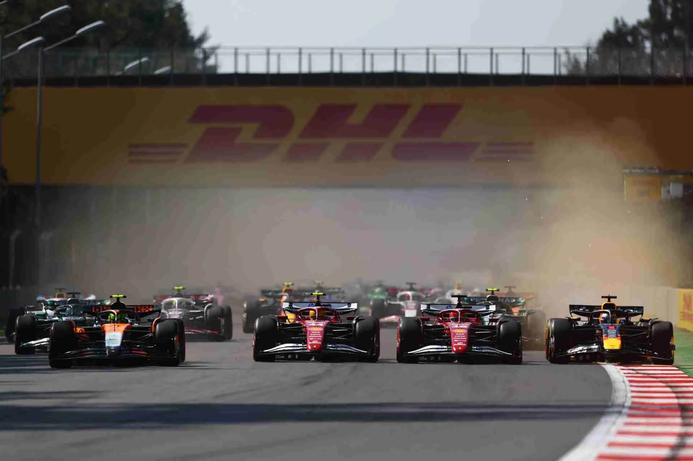
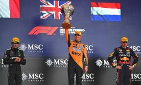

Cikkek az F1 Világból
Éjszakai varázslat: Norris dominált Szingapúrban, szorul a hurok a Red Bull nyakán

A Marina Bay utcai pálya reflektorfényei alatt Lando Norris ismét bizonyította, hogy készen áll a világbajnoki cím elhódítására. A McLaren brit kiválósága a pole pozícióból indulva, ellentmondást nem tűrő versenyzéssel aratott rajt-cél győzelmet, miközben legfőbb riválisa, Max Verstappen csak a kármentésre koncentrálhatott. A szűk utcai kanyarokban a Red Bull RB21-es láthatóan küszködött az egyensúllyal, amit a Ferrari pilótái is kíméletlenül kihasználtak, tovább szorítva hátra a címvédőt.
A futam kulcsmomentuma a 20. körben érkezett el, amikor egy biztonsági autós fázist követően Norris képes volt azonnal leszakítani az üldözőket, megfutva a verseny leggyorsabb körét is. Oscar Piastri negyedik helyével a McLaren értékes pontokat gyűjtött a konstruktőri versenyben is. „Tudtuk, hogy a fizikai kihívás óriási lesz, de az autó ma egyszerűen tökéletes volt. Minden körben éreztem a tapadást, és ez hatalmas önbizalmat ad a szezon hátralévő részére” – nyilatkozta a leintés után a láthatóan kimerült, de boldog győztes. Ezzel az eredménnyel a bajnoki pontkülönbség drasztikusan lecsökkent, előrevetítve egy izgalmas amerikai fordulót.
Verstappen visszatért a csúcsra Austinban - McLaren-dráma az USA Nagydíjon

A texasi Circuit of the Americas aszfaltcsíkján Max Verstappen elemi erővel vágott vissza a kétkedőknek. A Red Bull háromszoros világbajnoka a sprintgyőzelem után a vasárnapi főfutamon is megállíthatatlannak bizonyult, véget vetve hetek óta tartó nyeretlenségi sorozatának. A csapat által hozott átfogó aerodinamikai fejlesztések – különösen az új padlólemez – láthatóan megoldották az autó korábbi egyensúlyi gondjait, így a holland pilóta már az első kanyarban magabiztosan fordult el az élen.
A McLaren számára azonban rémálomba illő fordulatokat hozott a délután. Bár Lando Norris sokáig lőtávolban autózott, egy elhibázott gumistratégia és egy lassú kerékcsere miatt értékes másodperceket veszített, végül be kellett érnie a dobogó alsóbb fokával. A csapatrádión hallható feszült párbeszédek is jelezték: a wokingi garázsban tapintható a nyomás. Oscar Piastri versenye sem alakult simán, egy koccanás miatt sérült első szárnnyal csak a középmezőnyben végzett. „Jó újra a tetején állni. Austin mindig különleges, de ma a csapat munkája volt az igazi kulcs” – mondta Verstappen, aki ezzel a győzelemmel lélegzetvételnyi előnyhöz jutott a tabellán.
Norris diadal Mexikóban - új bajnoki éllovas született

Történelmi pillanatoknak lehetett tanúja az Autódromo Hermanos Rodríguez közönsége: a 2025-ös szezon egyik legfordulatosabb versenyén Lando Norris átvette a vezetést az egyéni világbajnoki pontversenyben. A ritka levegő és a nagy tengerszint feletti magasság komoly kihívás elé állította a motorokat és a hűtőrendszereket, de a McLaren technikai fölénye ezen a hétvégén megkérdőjelezhetetlen volt. Norris a negyedik helyről rajtolva, türelmes és érett versenyzéssel vadászta le az előtte haladókat, köztük a pole-ból induló Ferrarit és a gumikkal küzdő Verstappent.
A verseny drámáját Max Verstappen kiesése fokozta: a Red Bull motorproblémák miatt lassult le a táv felénél, ami nullázást jelentett a címvédőnek. Ez a fordulat tálcán kínálta a lehetőséget Norrisnak, aki élt is vele. A leintéskor a brit pilóta örömkönnyekkel küszködve köszönte meg csapatának a munkát. „Gyerekkori álmom vált ma valóra azzal, hogy vezetem a bajnokságot, de a munka neheze még hátravan” – értékelte a helyzetet az új éllovas. A mexikói közönség, bár Sergio Pérez kiesése miatt csalódott volt, sportszerűen ünnepelte az új bajnoki aspiránst, aki immár a saját kezében tartja a sorsát.
Norris duplázott Brazíliában - Antonelli berobbant, Verstappen újra dobogón

Interlagos sosem okoz csalódást, ha drámáról van szó. Az esős időjárás által megkavart Brazil Nagydíjon Lando Norris zsinórban második győzelmét aratta, ezzel megszilárdítva frissen megszerzett vezető helyét. A vizes aszfalton a McLaren pilótája sebészi pontossággal vezetett, elkerülve azokat a hibákat, amelyek több riválisát is a falba kényszerítették. Győzelmével 24 pontra növelte előnyét a bajnokságban, ami két futammal a vége előtt hatalmas lépés a végső siker felé.
A nap szenzációját azonban nem a győztes, hanem a második helyezett szolgáltatta. Kimi Antonelli, a Mercedes 19 éves olasz újonca élete versenyét futotta. A kaotikus körülmények között olyan érettségről tett tanúbizonyságot, ami a legnagyobb legendákat idézte: bátor előzésekkel és higgadt védekezéssel tartotta maga mögött a felzárkózó Max Verstappent. „Hihetetlen érzés! Amikor láttam Maxot a tükörben, tudtam, hogy nem hibázhatok. Ez a dobogó az egész csapaté” – nyilatkozta a boldog újonc. Verstappen harmadik helye igazi kármentés volt a mexikói katasztrófa után, de a holland arckifejezése elárulta: tudja, hogy a címvédés esélye egyre távolabb kerül.